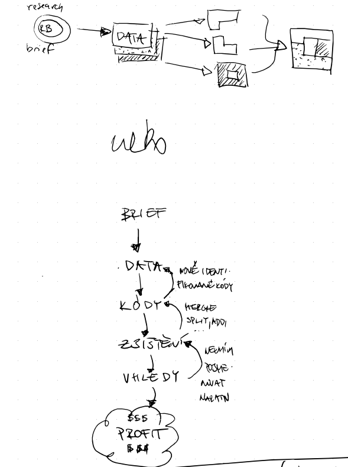

Tematická analýza
znovu a lépe
22. června 2024, Brno
 Prezentace k dispozici po naskenování QR kódu
Prezentace k dispozici po naskenování QR kódu
Proč tohle téma?
- Velký (pro mě až mystický) a důležitý téma
-
Málo času v semestru
- Dobrá šance teď zreflektovat a poučit se
Cíle přednášky
- Osvěžit si pojmy
- Doplnit znalosti
- Jak na to šel náš (drým)tým?
- Lekce z literatury
- Checklist pro příště ✅
Thematic analysis is a systematic method of breaking down and organizing rich data to facilitate the discovery of significant themes
TA prakticky
nějaký obrázek
TA prakticky II
- nejednotná terminologie napříč zdroji
- neexistuje "správný" proces pro všechny případy
-
silně iterativní
- teoretické vzorkování (→) jako klíč
-
silně paralelní proces
- sbírám data
- analyzuju data
- vyhodnocuju nasycenost
- proměňuju výzkumnou otázku
Teoretické vzorkování
-
cíl je dosáhnout teoretické saturace
- tj. nově nasbíraná data nám už nové informace nepřinesou
A co na to
Drýmtým ?
Jak fungují týmy, které úspěšně transformují státní správu?
Jak jsme na to šli?
-
Framing
-
Data
-
Čištění
-
Kódování
-
Zjištění
- Vhledy
-
Zjištění
-
Kódování
-
Čištění
-
Data
-
hodně iterací ke konci, málo v průběhu
- Proč? Protože semestr :)
TADY BUDE VIDEO JAK ZOOMUJU NA NÁŠ CONDENS a MOŹNÁ i DO MIRA
Jak to šlo?
- nebyl čas na chyby
- málo času obecně
- jak dělat iterace v linearizovaným semestru?
- remote/async/condens/life
- chtěli jsme to dělat dobře a to se, doufám, povedlo
Co se nám dařilo?
- být na sebe hodný a umět si vyjít vstříc
-
data > čištění > zjištění > vhledy
- dobrý rule of thumb
-
výběr tématu
- zkoumat něco, co zajímá i participantstvo je skvělý
- používat nástroje, co nepřekáží
- kvalitně si vysedět úvodní framing
- často si připomínat cíl výzkumu
Co příště jinak?
- líp čistit data obzvlášť při spolupráci více lidí
- poctivě kódovat a nenechávat zbytečný clutter
-
míň vodopád, víc iterací a adaptace
- v semestrálním setupu to bylo skoro nemožný
- víc času dát do opečování coding handbooku
- otevřené kódování na začátek?
Checklist pro příště ✅
- ...
Recap
- Systematičnost
- Teoretické samplování
- Trvá to
- ...?
A jak to šlo vám?
Obrázek kočičky ofkórs :)